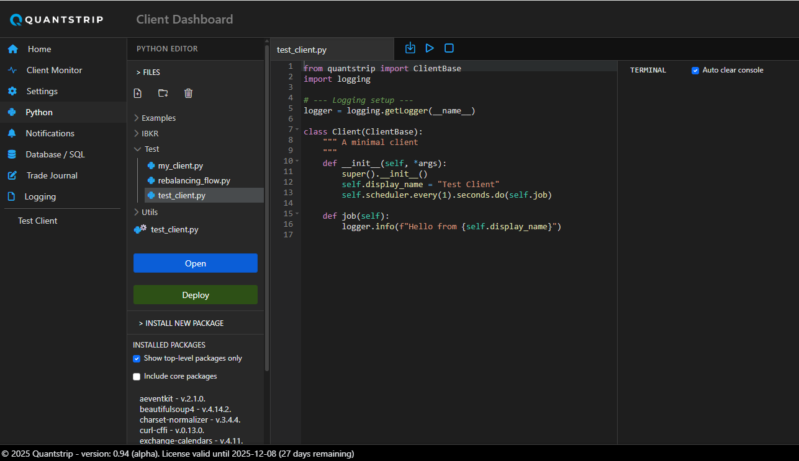
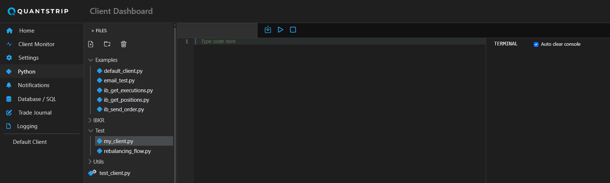
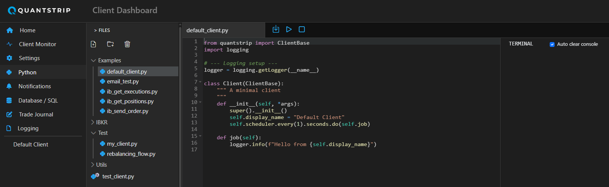
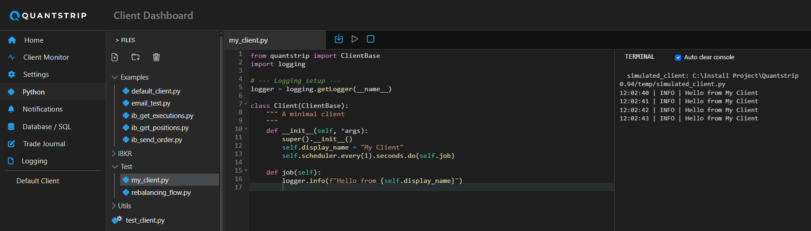
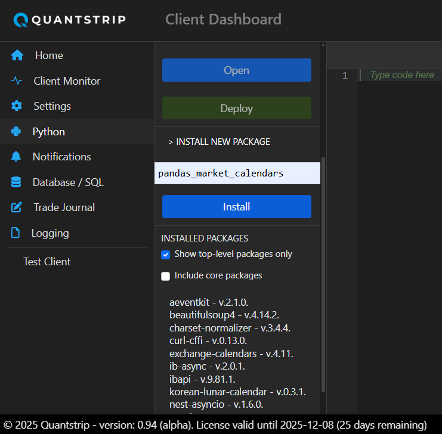

Python Editor
The Quantstrip Dashboard includes an integrated Python editor for developing and simulating client modules. When you execute code in the built-in IDE, it loads as a simulated client module and runs exactly as it would in the production environment.
The ClientBase class is required
All code must implement the ClientBase class to execute properly. The editor does not support arbitrary Python scripts.

Development Workflow
Creating a New Client File
To implement a new client module, create a file in the Test folder.

Using the Default Client Template
- Navigate to the
Examplesfolder - Open
default_client.pyand copy its contents - Return to the
Testfolder and paste the code into your new file - Customize the display name and configure the job schedule
- Implement your business logic in the
job()function

Running Simulations
Execute your code in simulation mode and verify correct operation by monitoring log messages in the terminal window.
Logging Best Practices
Use the logger object for output instead of print(). The print() function does not redirect to the terminal window.

Configuring Single-Run Testing
For testing scenarios that require a single execution—such as validating execution rules or confirming order placement—configure the client to run once and exit:
- Set the schedule to execute every second (ensuring immediate execution on startup)
- Call
stop_client()at the end of thejob()function
This configuration stops the client automatically after completing the job.

Deploying to Production
After completing simulation testing, the client is deployed by moving it to the root directory. Select the client module to deploy and click the Deploy button. A cog icon on the Python file indicator confirms that the background process has registered and is running the client.

Avoid manual copy
Though it's possible to copy a client module and paste it in the root directory manually it is not recommended. If the client module already exists it will be overwritten with the new version but not reoladed in the run time environment. When using the Deploybutton, the existing client will be removed first and there will be a short delay before the new version of the client is pasted. This triggers the bacground service to unload the existing module and load the new version to ensure that the updated client is prperly deployed in production.
Managing PyPI Packages
Feature in Development
Package management functionality is currently under development. The embedded pip installer supports many packages but may not work with all dependencies due to Python packaging complexity.
Installing Packages
Install packages directly from the Python editor:
- Expand the INSTALL NEW PACKAGE section
- Enter the package name
- Click Install

Package Loading Considerations
Most packages load immediately after installation. However, some packages (such as yfinance) have dependencies with native C extensions or components that register at the C level or with atexit. These dependencies may conflict with the running Python interpreter.
Service Restart May Be Required
If a package fails to load after installation, restart the background service to resolve conflicts.
Package Management Notes
Direct use of pip is not recommended. Quantstrip runs as a frozen installation in a virtual environment, which overrides the default package location in /Lib/site-packages/.